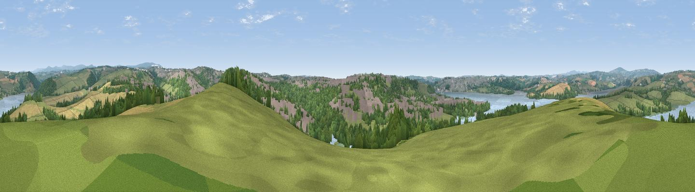

Tor Hill
#14117 in England · top 25% of its area beats it · near Bere FerrersWhere it is
The exact computed spot (SX 45881 61043). Click the marker for map links.
The view, rendered

A 360° render of this exact spot computed from the terrain model, tree cover and land cover — summer colours, afternoon light, calibrated against photographs of famous viewpoints. Real trees, hedges and buildings will differ in detail.
The panorama
Grey silhouette: terrain skyline in each direction (720 bearings, Earth curvature and refraction included). Dashed green: skyline with trees (+15 m) and buildings (+8 m) as obstacles. Blue strip: how far the ground is visible on each bearing.
Where the view opens
Wedge length = distance to the farthest visible ground on that bearing (vegetation-aware). Rings at 10, 25 and 50 km.
What fills the view
35% grassland · 30% woodland · 14% built-up · 13% cropland · 8% water
Angular shares of the visible panorama (visual magnitude), not map area. Landscape diversity 0.65 (0–1 Shannon).
Key numbers
More beautiful places nearby
The staircase of upgrades: each row has a higher view potential than everything closer. Driving times are estimates from straight-line distance, calibrated against real road routing — check an actual route before setting out.
| Place | Direction | Drive | Score |
|---|---|---|---|
| Viewpoint near Roborough | ENE · 3 km | ~7 min | 61.7 |
| Viewpoint near St Mellion | NW · 7 km | ~14 min | 62.2 |
| Viewpoint near St Mellion | WNW · 7 km | ~14 min | 67.3 |
| Viewpoint near Shaugh Prior | ENE · 8 km | ~17 min | 73.2 |
| Viewpoint near Shaugh Prior | ENE · 9 km | ~17 min | 77.0 |
| Viewpoint near Lee Moor | E · 10 km | ~19 min | 82.7 |
| Viewpoint near Downderry | WSW · 14 km | ~25 min | 83.5 |
| Viewpoint near Polperro | WSW · 29 km | ~45 min | 83.7 |
50.42896, -4.17124 · source: dobih hill · position refined by local search. Computed location — check access rights before visiting.